Introduction
In this tutorial, we are going to create a basic sky for your level. Our sky will consist of the following three objects:
All three objects will be added from scratch and modified to work with each other to create a nice looking atmosphere. To get started, follow the setup procedure below.
Setup
This article assumes that you have read through the Toolbox and World Editor Basics sections of this documentation so that you are familiar with basic operations such as creating a new level and activating tools such as the Object Editor. If you have not, please review those documents and then return here to continue.
None of the modifications you are about to make are required for future tutorials, so feel free to create a new level or use an existing one now. As long as you have access to stock materials you are ready to go. For this article, we are going to use a new level.
Because every new mission starts with some kind of sky object (Sun, Skybox, etc), you are not technically starting from scratch. You will want to clear your level before beginning.
None of the modifications you are about to make are
required for future tutorials, so feel free to create a new level or
use an existing one. As long as you have access to stock
materials, you are good to go. For this article, we are going to be
using a new level.
Because every new mission starts with some kind of sky object (Sun, Skybox, etc), you are not technically starting from scratch. You will want to clear your level before beginning.
Finally, the textures for a simple Skybox are provided through this link: click here to download. You will use these later in the tutorial when creating a new Skybox material.
Delete Existing Objects
Start by switching to the Object Editor tool. Locate the Scene Tree panel, then select the Scene tab. Inside the MissionGroup locate any objects that contain the words sky, sun, or clouds in them. Select the object, then delete it by pushing the delete key, or by clicking the trash can icon.
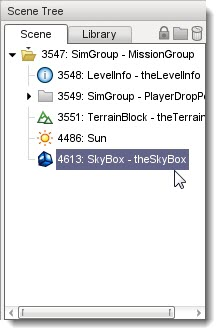
The objects should no longer be present in the Scene Tree. More
importantly, the sky has now been removed from your level. Because nothing is
rendered beyond a Skybox, Torque 3D will be rendering absolutely nothing where
the sky used to exist.
Additionally, after you delete the Sun there might not be any lighting in your level. This will result in everything being completely shadowed, but we will fix that in just a minute. For now, save your blank level before continuing.
(click to enlarge)

A New Sun
Now we can add a Sun with default attributes. Start by opening the Library tab in the Scene Tree dialog. Once the Library tab is active, click on the Level tab, then double click the Environment subcategory. The list of available environment objects should now be visible.
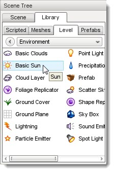
Double-click on the Basic Sun symbol. Once you do, the Create Object dialog will pop up.
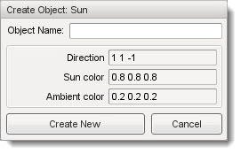
Since we want to use stock values for everything, just click Create New without changing anything.
(click to enlarge)
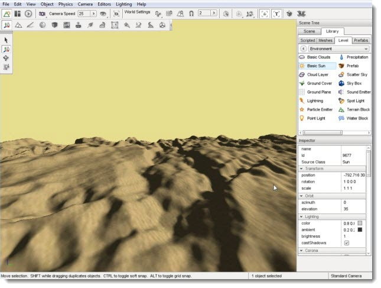
Adding a Skybox
Now we can add a Skybox from scratch. You should still be viewing the environment category which is also where the Skybox object is located. If not, change back to the Library tab in the Scene Tree panel, then select the Level tab then double click the Environment folder. Locate the Skybox entry and double-click it.
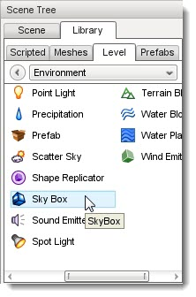
With your sky restored in the level, we can now tweak some settings to make it look nicer.
Changing Skybox Material
Without a designated material, your Skybox will still be rendering a single color. To change that use the Scene Tree click the Scene tab and select the Skybox. With the Skybox object selected, scroll through its properties until you find the Material field.
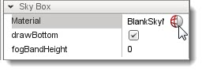
Click on the small globe icon to open the Material Selector:
(click to enlarge)

The Material Selector will show all of the materials that could be found by the engine. Look for one containing "Sky" in the description (e.g. BlankSkyMat). Select it by single clicking on the image, then press the Select button.
After the Material Selector dialog closes your scene will update and render your new sky choice:
(click to enlarge)
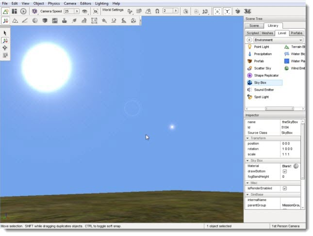
While technically rendering a material, a solid blue sky is not much to
look at. If you want a photo-realistic Skybox created from digital
images or Skybox creators, you will need to create a cubemap. You can
create a cubemap using the Material Editor. Go ahead and click on the
Material Editor icon to activate the tool:

When the Material Editor loads, look for the Material Properties section on the right side of the screen, underneath the Material Preview window. At the top of the Material Properties section, you'll see a small icon that looks like a blank piece of paper. That is the Create New Material button. Go ahead and click that icon.

This action will create a base material definition similar to this:
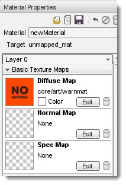
Cubemaps do not make use of diffuse, normal, or spec maps, so those can be deleted. Click on the trash bin icon in each of the following groups - Diffuse Map, Normal Map, and Spec Map. This will delete the material associated with that group if it had one. The gray and white checkerboard pattern means that no material is assigned to a group. Change the name of your material by entering BlueSky in the text box next to the Mission label, then pressing the Enter key on the keyboard, then click the save button - the little floppy disk icon at the top.
NOTE: It is very important that you press Enter after typing your material name. If you just type the text and click directly on the save icon the material
will not be saved!
Your current definition should resemble the following:
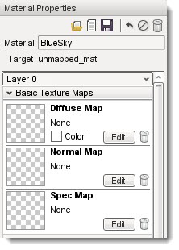
Now that the base material is setup, you can create a cubemap. Scroll down to the Advanced (all layers) section of the material in the Material Properties pane. Click on the heading to expand it if the content is not visible. In the middle is a drop down box that reads "None" and to the right is the word "Reflection." Click this box then select the cubemap entry. Once you have done this, click on the Edit button:
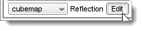
The Create Cubemap dialog will appear. From here you can select an existing sky cubemap or create a new one, which is what we are going to do. At the top of the cubemap list you will find three icons. Click on the page icon to create a new cubemap:
(click to enlarge)
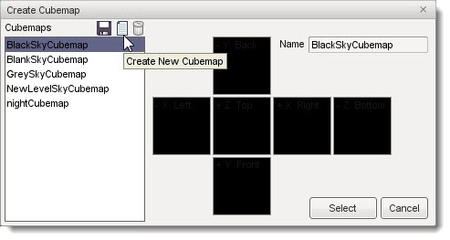
You will be prompted to name your new cubemap. Call it "BlueSkyCubemap". Click the create button once you have finished.
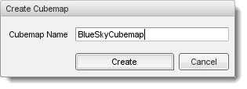
You should now see the cubemap template consisting of six colorful squares bordering each other. It may not make sense at first glance, but each square represents a section of a cube if you were to slice it at the seams and lay it out.
(click to enlarge)
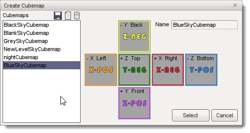
The +/- X, Y, Z labels are coordinates, but we have also given them directional names (Left, Right, Top, Bottom, Front, and Back). If you need more visualization, imagine you have a box placed over your head with the sky painted on the inside. If you are looking straight up, you are viewing the
Top. If the box unfolded at the edges, you would see exactly what you are viewing here.
We will now build the cubemap for the sky to demonstrate this. Make sure you have
downloaded the Blue_Sky files, and unzipped them into your Torque3D/My Projects/ game/art/skies/game/art/skies directory, where is the name of the project you opened or created for this tutorial. Click on the X-POS (Left) icon on the cubemap display. A browser window will open:
(click to enlarge)
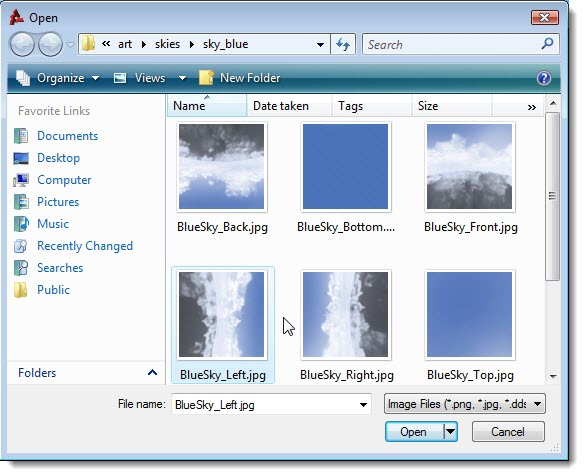
Navigate to the directory where your sky art is located, click on the blue_0004.jpg file then click the Open button. The sky image will be placed on the left section of your cubemap:
(click to enlarge)
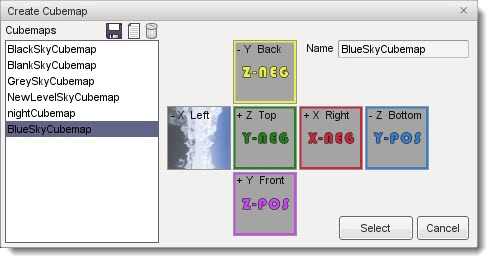
The "sky" portion of the image will be on the right side of the picture if you selected the proper image.
Repeat this process for Front, Right, Back, Top, and Bottom. Here is the placement for the different graphic files:
Right - blue_0002.jpg
Front - blue_0001.jpg
Back - blue_0003.jpg
Top - blue_0005.jpg
Bottom - blue_0006.jpg
Your final cubemap should look like the following:
(click to enlarge)
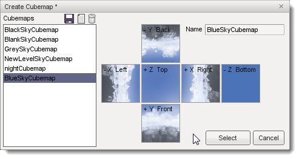
As you can now see, it is as if you are looking straight up at a sky with clouds surrounding your view. Once you are finished, click on the save icon (small floppy disk at the top-left of the dialog). You will be prompted to save your cubemap before continuing:
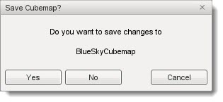
Click Yes to save the cubemap and return to the Create Cubemap dialog. Click the Select button to close the dialog and apply the new cubemap to the Material Properties.
When you are finished with your cubemap, your BlueSky material preview should show a Skybox with a strong reflection. This is completely normal, and just shows that this image can be applied to both Skybox objects and water reflections:
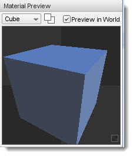
You will also notice that the new sky cubemap has been applied to the scene. This is only a preview and we have not yet told the scene to keep that cubemap as its Skybox. In the upper right hand corner of the Material Preview section there is a checkbox labelled "Preview in World". If you uncheck this box you will see that the new Skybox has not really been assigned to your Skybox yet. Well do that next.
Switch back to the object editor (F1 shortcut) and make sure your Skybox object is selected. Scroll down to the Skybox section of the properties, then click on the Material Selector icon  in the Material field. When the Material Selector appears, locate the BlueSky material and click Select. in the Material field. When the Material Selector appears, locate the BlueSky material and click Select.
(click to enlarge)
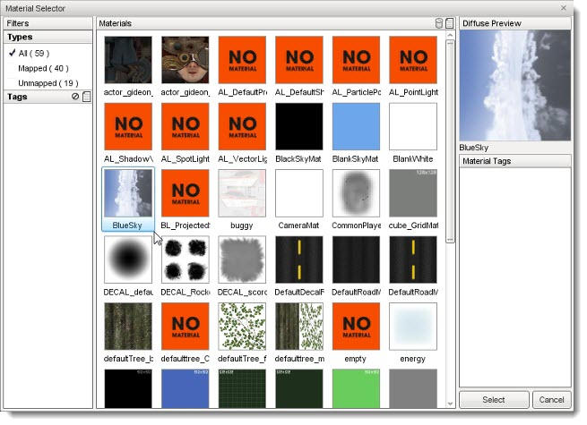
Your Skybox should now be rendering the cubemap you created earlier.
Instead of a bland, solid color you now have a more realistic Skybox with
some clouds simulated in the distance. Much more interesting.
(click to enlarge)
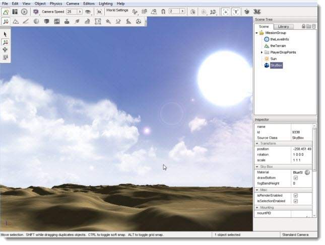
Adding Clouds
Finally, we are going to add some real clouds that are not a part of the Skybox. You have two choices for cloud layers: Basic Clouds and Cloud Layer. Since this a simple scene, we are going to go with Basic Cloud. Before proceeding, look at your Skybox and carefully note how the sky looks without a cloud object:
(click to enlarge)
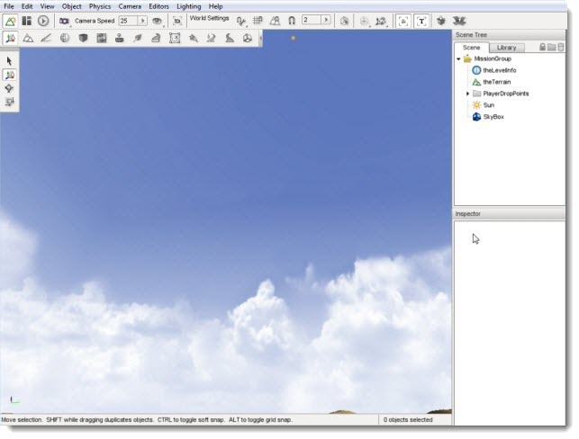
When you are ready to add clouds start by switching to the Library tab in the Scene Tree panel. Click on the Level tab then select the environment folder. Once that is open, locate the Basic Clouds object (not the Cloud Layer object):

Double click the Basic Cloud object. A dialog will appear allowing you to fill out initial details. The Object Name is what you want your Cloud layer to be called in your MissionGroup. For now, just type in theClouds for the name.
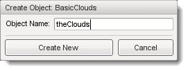
Click Create New and the Basic Clouds object will be added to your level. Three separate cloud layers will be rendering and moving across the sky slowly:
(click to enlarge)
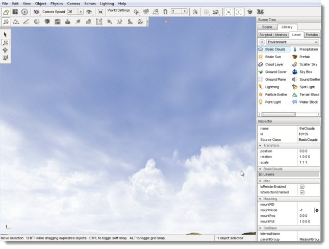
Select the new cloud layer - switch to the Scene tab in the Scene Tree pane, and select
theClouds from the list. Scroll to the BasicClouds section in the Inspector pane. Expand the Layers entry by clicking the + icon, then expand the entries [0], [1], and [2]. This displays the information on the three layers in this object.
The stock object will populate the three layers with sample cloud images. These are located by default in /My Projects/<Project>/game/core/art/skies. If for some reason you do not have these assets, you can download them by
CLICKING HERE. Each image is a transparent PNG, which means that portions of the image are clear so that you can see the background through them. Transparency is a requirement for the clouds to render properly and with realistic depth since you need to be able to see each layer without it blocking those behind it.
Right now, the cloud layers are stretched and look very hazy, or perhaps not very visible at all depending on your computers monitor brightness and contrast. This stretching causes the clouds to not match the static clouds that are present right within the Skybox cubemap, so we are going to make some changes. A more desired appearance will be wispy, very white clouds.
The texScale property determines how often the texture will repeat on this layer. Increasing texScale will cause the texture to be repeated, which is referred to as being "tiled", over a smaller area, which is be useful for low detail textures such as those used in this tutorial.
Increasing the texture repeat will make the layers appear to be more detailed and defined. For each layer [0], [1], and [2], set the
texScale property to 4.:
(click to enlarge)
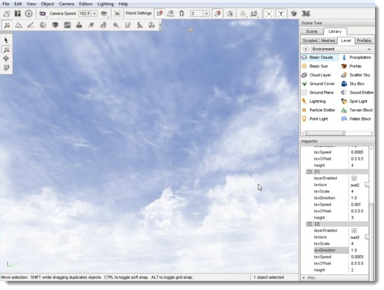
This is a good start, but the closest layer should be the most defined. Scroll down to Layers[2] and set the texScale to 8. This texture will repeat more often, making
it appear to be closer and clearer:
(click to enlarge)
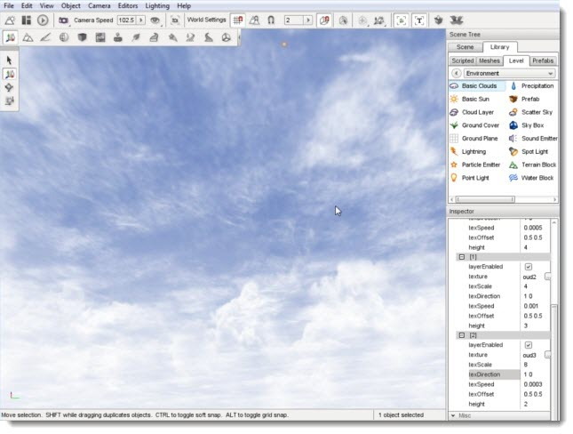
The last adjustment will affect the movement of the clouds.
Since Layers[2] is the closest and most defined, wind simulation should
be more dramatic. In other words, we want the closest cloud layer to
move the fastest. A single property controls how fast the cloud layer
moves: texSpeed.
If the property is set to 0, the cloud layer will not move. The higher
the number, the faster your cloud texture will scroll across the sky.
The stock value for Layers[2] texSpeed is 0.0003. Increase this value
to 0.005, which will cause the clouds to scroll faster:
(click to enlarge)
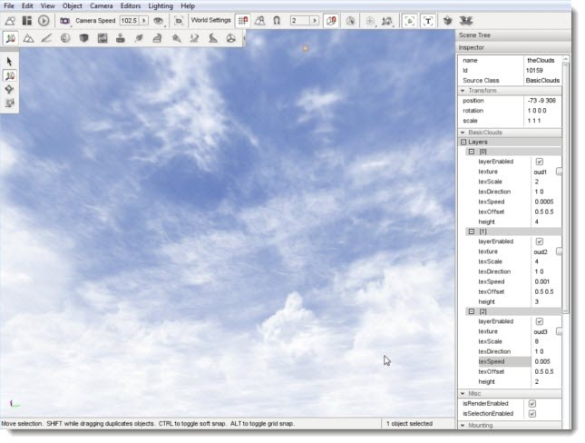
For reference, the following are the properties I have set
in my scene. You can use these, or continue to make adjustments to your
liking:
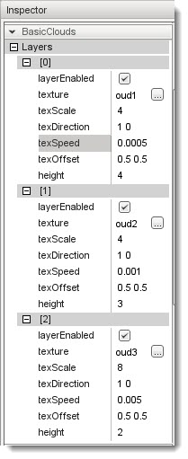
In the end, you should have a very nice looking blue sky with realistic clouds. The more clouds farther in the distance are presented by the Skybox, while the closer clouds are generated by the Basic Clouds object:
(click to enlarge)
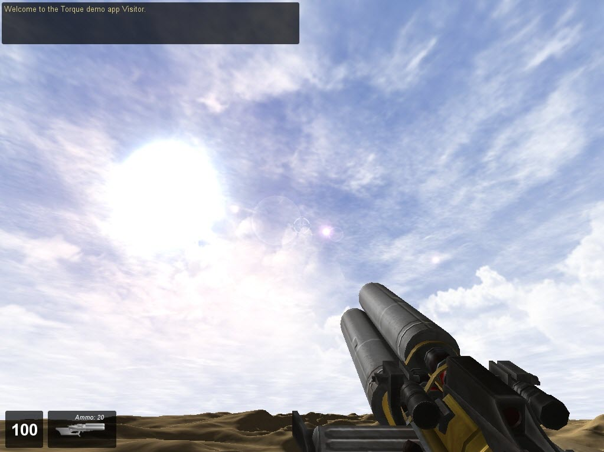
Conclusion
In this tutorial, you learned how to create a basic sky using the Sun, a Skybox, and Basic Clouds. These objects are simpler and have less impact upon a computers performance than the Scatter Sky and Cloud Layer. With the right images and software, artists can make really amazing Sky boxes and cloud textures.
Other tutorials make use of these objects, but in different ways. Feel free to continue experimenting with this scene to see what results you can come up with.
|
{kind=link}
{kind=link}
{kind=link}
{kind=link}
{kind=link}
{kind=link}
{kind=link}
{kind=link}
{kind=link}
{kind=link}
{kind=link}
{kind=link}
{kind=link}
{kind=link}
{kind=link}